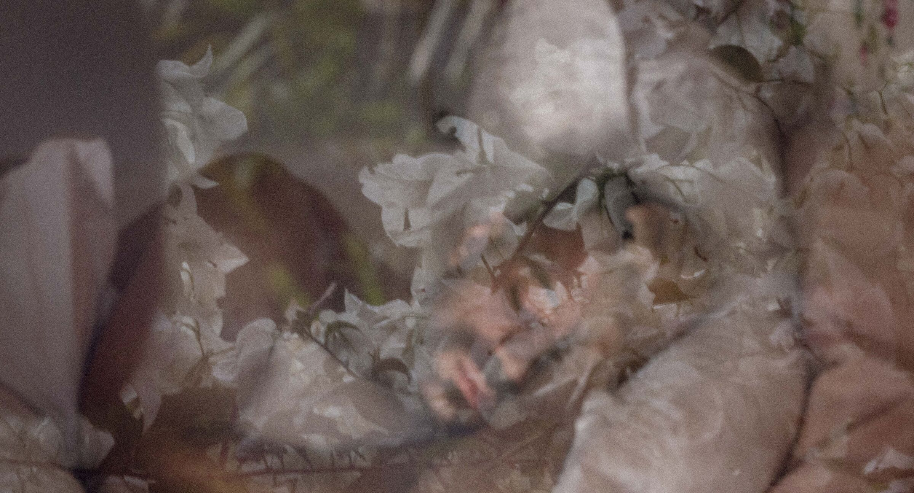

Un mariage, une retraite, une rencontre. Jamais seulement le lieu, jamais seulement la personne.

Ce qui change entre un mariage et une retraite, c'est la raison de la rencontre. La lumière que je cherche, la distance que je garde et le moment où je déclenche restent les mêmes.
Quatre séries, réunies par ce qui se répète d'une image à l'autre.


J'entre dans la scène, je laisse les gens s'installer, j'attends. Ce qui reste a vraiment eu lieu.


Je suis français et je vis au Brésil. Je vois de l'extérieur ce que ceux qui sont dedans ne remarquent plus. Avant l'image, mon métier était d'interpréter : des années à observer les gestes et ce que les gens disent sans parler.

Chacun crée son propre monde.
C'est peut-être ce qui me fascine le plus dans la photographie. L'image garde un instant, mais on ne sait jamais vraiment ce que cet instant a signifié pour la personne. À quel point il a compté, ou pas, pour elle.
Chacun part d'une vision du monde différente. Avec une photo on peut essayer de construire un pont, mais chacun verra ce qu'il veut et ce qu'il peut.
Une humilité que j'aime garder près de moi.

Dans le reste de mon travail, c'est la personne qui fait exister le lieu. Dans un hôtel, l'enjeu est inverse : le lieu doit se faire sentir seul, avant l'arrivée du moindre client.
Pour les hôtels, pousadas et retraites, il existe un travail à part.